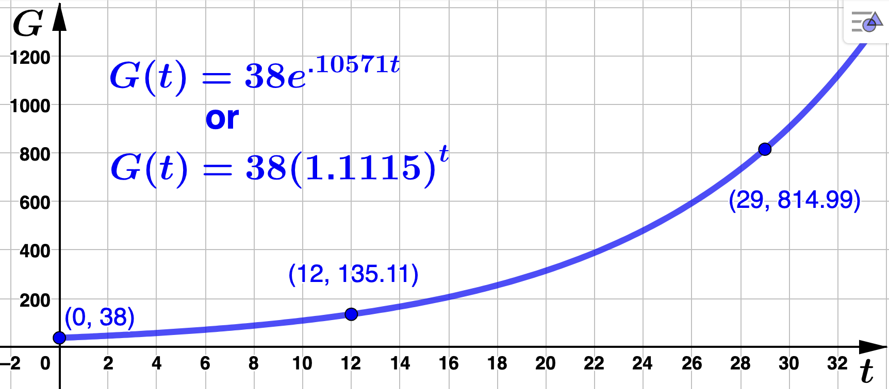

Section 5.2 Applications Of Exponential Functions - Exponential Growth And Decay
Exponential growth and decay are specific ways a quantity may change over time, \(t\text{,}\) and are modeled by functions of the form \(f(t) = y_0 e^{kt}\) or \(f(t) = y_0 b^{t}\) where
\(f(t)\) = quantity or amount at time \(t\)
-
\(f(0) = y_0e^{k \cdot 0} = y_0e^0 = y_0\) = initial amount, or
\(f(0) = y_0b^{0} = y_0\) = initial amount for general base \(b\text{.}\)
The model represents growth if \(k > 0\) (which is the the same as \(b > 1\))
The model represents decay if \(k < 0\) (which is the the same as \(0 < b < 1\))
In the examples below, we will constructing exponential growth and decay models given two data points or, a point and information about the growth/decay rate.
Example 5.2.2.
MyLeatherDream (MLD) has a webpage customers can use to design and order custom leather guitar cases. However, traffic has been slow, so MLD hires VL Consultants to help advertise their site. Before VL Consultants launches their advertising campaign MLD has 3,800 total visits to their site. The total number of visits grows exponentially and is up to 5,800 site visits four days after the start of the ad campaign.
Find a base
\(e\) exponential model,
\(G(t) = y_0e^{kt}\text{,}\) that gives the total number of visits to MLD's website in hundreds of visits, where
\(t\) is the number of days after the start of the ad campaign. Use your model to identify the continuous growth rate, then determine how many site visits MLD has 12 days after the start of the ad campaign.
Solution.
We need to use the given data to construct the model \(G(t) = y_0 e^{kt}\text{.}\) To do this we need to determine \(y_0\) and \(k\text{.}\)
We first determine the intial amount,
\(y_0\text{,}\) at time
\(t=0\) (recall
Item 2). We are given that MLD had 3,800 visits before the start of the ad campaign (at
\(t=0\)). This means the point
\((0,38)\) is on the the graph of
\(G(t)\text{.}\) That is,
\begin{equation*}
G(0) = y_0e^{k \cdot 0} = y_0e^{0} = y_0 = 38
\end{equation*}
so that \(G(t) = 38e^{kt}\text{.}\)
Now we find \(k\) using the remaining information. We are given that the number of site visits is up to 5,800 four days after the ad campaign began. This means \((4,58)\) is a point on the graph. In function notation, this translates to \(G(4) = 58\text{.}\) We solve the following for \(k\text{:}\)
\begin{align*}
G(4) \amp = 58\\
\\
38e^{4k} \amp = 58\\
\\
e^{4k} \amp = \frac{58}{38} \quad \textrm{(apply the natural log to both sides)}\\
\\
4k \amp = \ln\left(\frac{58}{38}\right) \quad (\textrm{recall} \knowl{./knowl/obs-apply-log.html}{\text{Item 5}}; \:
\textrm{here,} \: x=4k) \\
\\
k \amp = \frac{\ln\left(\frac{58}{38}\right)}{4}
\end{align*}
Rounding to five decimal places, \(k = .10571\) so that the continuous growth rate is 10.571% and
\begin{equation*}
G(t) = 38e^{.10571t}.
\end{equation*}
Evaluating at \(t=12\) and rounding to two decimal places gives \(G(12) = 38e^{.10571(12)} = 135.11\) which means MLD had 13,511 site visits 12 days after the start of the ad campaign.
How many days after the start of the ad campaign will it take MLD reach 81,500 site visits?
Solution.We are asked to solve
\(G(t) = 815\) for
\(t\)
\begin{align*}
G(t) \amp = 815\\
\\
38e^{.10571 t} \amp = 815\\
\\
e^{.10571 t} \amp = \frac{815}{38} \quad \textrm{(apply the natural log to both sides)}\\
\\
.10571t \amp = \ln\left(\frac{815}{38}\right) \quad (\textrm{recall} \knowl{./knowl/obs-apply-log.html}{\text{Item 5}} \:
\textrm{here,} \: x=.10571t)\\
\\
t \amp = \frac{\ln\left(\frac{815}{38}\right)}{.10571}\\
\\
t \amp \approx 29
\end{align*}
MLD will reach 81,500 site visits approximately 29 days after the start of the ad campaign?
Convert
\(G(t)\) to a base
\(b\) model of the form
\(G(t) = y_0 b^t\) and identify the actual growth rate.
Solution.Using
Item 2 with
\(k = .10571\) and rounding to five decimal places, we have
\(b=e^.10571 \approx 1.11150 \) so that
\begin{equation*}
G(t) = 38(1.11150)^t
\end{equation*}
The actual growth rate is
\(1.11150 - 1 = .11150\) or
\(11.15\%\text{.}\) The graph of
\(G(t)\) is below with corresponding points labeled.

Example 5.2.3.
Mingy's Construction Company recently purchased a $52,000 pickup truck. Suppose this pickup truck depreciates in value by 12.5% each year. This percentage is used to reduce the value of the truck at the end of each year, so that at the end of each year (or start of each new year) the value of the pick up truck is 12.5% less.
Find a general base
\(b\) expoenetial model,
\(M(t) = y_0 b^t\text{,}\) that gives the value of Mingy's truck
\(t\) years after it was purchased. Use your model to determine the value of the truck after 3 years.
Solution.
We first determine the intial amount,
\(y_0\text{,}\) at time
\(t=0\) (recall
Item 2). We are given that Mingy purchased the truck (at
\(t=0\)) for $52,000 which means the point
\((0,52000)\) is on the the graph of
\(G(t)\text{.}\) In other words
\begin{equation*}
M(0) = y_0 b^{0} = y_0 = 52,000
\end{equation*}
so that \(M(t) = 52,000 b^{t}\text{.}\)
Now we find
\(b\) using the remaining information. Recall
Remark 5.2.1. We are
given that 12.5%, or .125, is the (actual) decay rate for the truck. This means
\begin{equation*}
.125 = 1-b
\end{equation*}
and we find that b = .875 so that \(M(t) = 52,000(.875)^t\text{.}\) Notice that a decay (or depreciation) rate of 12.5% each year means the truck retains 87.5% of its value each year.
Now, rounding the output value to the nearest cent,
\begin{equation*}
M(3) = 52,0000(.875)^3 \approx 34,835.94
\end{equation*}
so that at the end of the third year (or start of the fourth year), Mingy's truck will be worth $34,835.94.
Salvage value is the book value of an asset after all depreciation has been fully expensed. The salvage value of an asset is based on what a company expects to receive in exchange for selling or parting out the asset at the end of its useful life. Mingy's truck has a salvage value of $5,500. How long will it take for Mingy's truck to reach its salvage value? Round
\(t\) to 2 decimal places then round up to the nearest whole year to answer.
Solution.We are asked to solve
\(M(t) = 5,500\) for
\(t\text{.}\)
\begin{align*}
M(t) \amp = 5,500\\
\\
52,000(.875)^t \amp = 5,500\\
\\
.875^t \amp = \frac{5,500}{52,000} \quad \textrm{(apply the natural log to both sides)}\\
\\
t\ln(.875) \amp = \ln\left(\frac{55}{520}\right) \quad (\textrm{recall} \knowl{./knowl/fact-log-tool.html}{\text{Fact 5.1.12}})\\
\\
t \amp = \frac{\ln\left(\frac{55}{520}\right)}{\ln(.875)}\\
\\
t \amp \approx 16.82
\end{align*}
It will take approximately 17 years for Mingy's truck to reach its salvage value.
Convert
\(M(t)\) to a base
\(e\) model of the form
\(G(t) = y_0 e^{-kt}\) and identify the continuous decay rate.
Solution.Using
Item 1 with
\(b = .875\) and rounding to five decimal places, we have
\(k= \ln(.875) \approx -.13353\) so that
\begin{equation*}
M(t) = 52,000(.875)^t = 52,000e^{\ln(.875) t} = 52,000e^{-.13353 t}.
\end{equation*}
The corresponding continuous decay rate is
\(.13353\) or
\(13.353\%\text{.}\) The graph of
\(M(t)\) is below with corresponding points labeled.
Example 5.2.4.
ADTF Distributors had 8000 clients at the start of 1999 and the number of clients grew exponentially over time. At the start of 2003 ADFT Distributors had 9,536 clients.
Find a base
\(b\) exponential model
\(D(t) = y_0b^t\) that gives the total number of clients ADTF Distributors has in thousands
\(t\) years after 1999. Identify the (actual) growth rate and determine how many (whole) clients ADTF Distributors had in 2009.
Solution.
To do this we need to determine \(y_0\) and \(b\) given that
(remember,
\(D\) is in thousands). We first determine the intial amount,
\(y_0\text{,}\) at time
\(t=0\) (see the first bullet point above and recall
Item 2).
\begin{equation*}
D(0) = y_0b^0 = y_0 = 8
\end{equation*}
so that \(D(t) = 8b^{t}\text{.}\)
Now we can use the fact that \(D(4) = 9.536\) to find \(b\text{.}\) We solve the following for \(b\text{,}\) rounding our answer to five decimal places:
\begin{align*}
D(4) \amp = 9.536\\
\\
8b^{4} \amp = 9.536\\
\\
b^{4} \amp = \frac{9.536}{8} \quad \textrm{(take fourth root of both sides)}\\
\\
b \amp = \left(\frac{9.536}{8}\right)^{1/4} \\
\\
b \amp \approx 1.04489
\end{align*}
We find that the number clients ADTF Distributors has (in thousands) \(t\) years after 1999 is
\begin{equation*}
D(t) = 8(1.04489)^t.
\end{equation*}
To determine the (actual) growth rate, recall
Remark 5.2.1. Now,
\begin{equation*}
b - 1 = 1.04489 - 1 = .04489
\end{equation*}
and we see that the (actual) growth rate is .04489 or 4.489%. Since \(t=10\) corresponds to 2009
\begin{equation*}
D(10) = 8(1.04489)^{10} \approx 12.41068 \: \textrm{(rounded to 5 decimal places).}
\end{equation*}
While we would typically round this number up, we do not want to count a fraction of a client in our total. So, in 2009 ADTF Distributors had approximately 12,410 (whole) clients.
How many years (after 1999) will it take the number of clients to triple?
Solution.Since ADTF Distrubutors had 8000 clients in 1999, we are asked to find a value for
\(t\) such that
\(D(t) = 3 \cdot 8\) (remember,
\(D(t)\) is in thousands, so
\(3 \cdot 8 = 24\) corresponds to 24,000 clients).
\begin{align*}
D(t) \amp = 3 \cdot 8 \\
\\
8 (1.04489)^t \amp = 3 \cdot 8\\
\\
(1.04489)^t \amp = 3 \quad \textrm{(apply the natural log to both sides)}\\
\\
t\ln(1.04489) \amp = \ln(3) \quad (\textrm{recall} \knowl{./knowl/fact-log-tool.html}{\text{Fact 5.1.12}}) \\
\\
t \amp = \frac{\ln(3)}{\ln(1.04489)}\\
\\
t \amp \approx 25.019
\end{align*}
The number of clients ADTF Distributors has will triple in about 25 years after 1999 (or, by 2024).
Convert
\(D(t)\) to a base
\(e\) model of the form
\(D(t) = y_0 e^{kt}\) and identify the continuous growth rate.
Solution.Using
Item 1 with
\(b = 1.04489\) and rounding to five decimal places, we have
\(k=\ln(1.04489) \approx .04391 \) so that
\begin{equation*}
D(t) = 8e^{.04391t}
\end{equation*}
The continuous growth rate is then
\(.04391\) or
\(4.391\%\text{.}\) The graph of
\(D(t)\) is below with corresponding points labeled.
Example 5.2.5.
Bound-2-Read was a national chain of bookstores that failed to respond quickly to the digital age. In fact, their annual revenue was 411 million dollars at the end of the fiscal year 1996, but by the end of fiscal year 2001 was down to 296.9 million dollars. We will assume that the annual revenue for Bound-2-Read continued to decrease according to an exponential decay model.
Find a base
\(e\) exponential model
\(R(t) = y_0e^{kt}\) that gives Bound-2-Read's annual revenue in millions dollars where
\(t = 0\) is the conclusion of the 1996 fiscal year. Determine the continuous decay rate and use your model to find Bound-2-Read's annual revenue in 2004.
Solution.
To do this we need to determine \(y_0\) and \(k\) given that
We first determine the intial amount,
\(y_0\text{,}\) at time
\(t=0\) (see the first bullet point above and recall
Item 2).
\begin{equation*}
R(0) = y_0e^{k \cdot 0} = y_0 e^0 = y_0 =411
\end{equation*}
so that \(R(t) = 411e^{kt}\text{.}\)
Now we find \(k\) using the fact that \(R(5) = 296.9\text{.}\) We solve the following for \(k\text{:}\)
\begin{align*}
R(5) \amp = 296.9\\
\\
411e^{5k} \amp = 296.9\\
\\
e^{5k} \amp = \frac{296.9}{411} \quad \textrm{(apply the natural log to both sides)}\\
\\
5k \amp = \ln\left(\frac{296.9}{411}\right) \quad (\textrm{recall} \knowl{./knowl/obs-apply-log.html}{\text{Item 5}})\\
\\
k \amp = \frac{\ln\left(\frac{296.9}{411}\right)}{5}
\end{align*}
Rounding to five decimal places, \(k = -.06504\) so that the continuous decay rate is 6.504% and
\begin{equation*}
R(t) = 411e^{-.06504t}.
\end{equation*}
Evaluating at \(t=8\) and rounding to one decimal place gives \(R(8) = 411e^{-.06504(8)} = 244.3\) which means Bound-2-Read's annual revenue in 2004 was about $244.3 million dollars.
What was the first full fiscal year where the annual revenue of Bound-2-Read was below 137.1 million dollars?
Solution.We are asked to solve
\(R(t) = 137.1\) for
\(t\)
\begin{align*}
R(t) \amp = 137.1\\
\\
411e^{-.06504t} \amp = 137.1\\
\\
e^{-.06504 t} \amp = \frac{137.1}{411} \quad \textrm{(apply the natural log to both sides)}\\
\\
-.06504t \amp = \ln\left(\frac{137.1}{411}\right) \quad (\textrm{recall} \knowl{./knowl/obs-apply-log.html}{\text{Item 5}})\\
\\
t \amp = \frac{\ln\left(\frac{137.1}{411}\right)}{-.06504}\\
\\
t \amp \approx 16.88
\end{align*}
Rounding up, we use
\(t=17\text{,}\) so that the first full fiscal year where Bound-2-Read's annual revenue was below 137.1 million was 2013.
Convert
\(R(t)\) to a base
\(b\) model of the form
\(G(t) = y_0 b^t\) and identify the (actual) decay rate.
Solution.Using
Item 2 and rounding to five decimal places, we have
\(b=e^{-.06504} \approx .93703 \) so that
\begin{equation*}
R(t) = 411(.93703)^t.
\end{equation*}
The (actual) decay rate is
\(1 - .93703 = .06297\) or
\(6.297\%\text{.}\) The graph of
\(R(t)\) is below with corresponding points labeled.